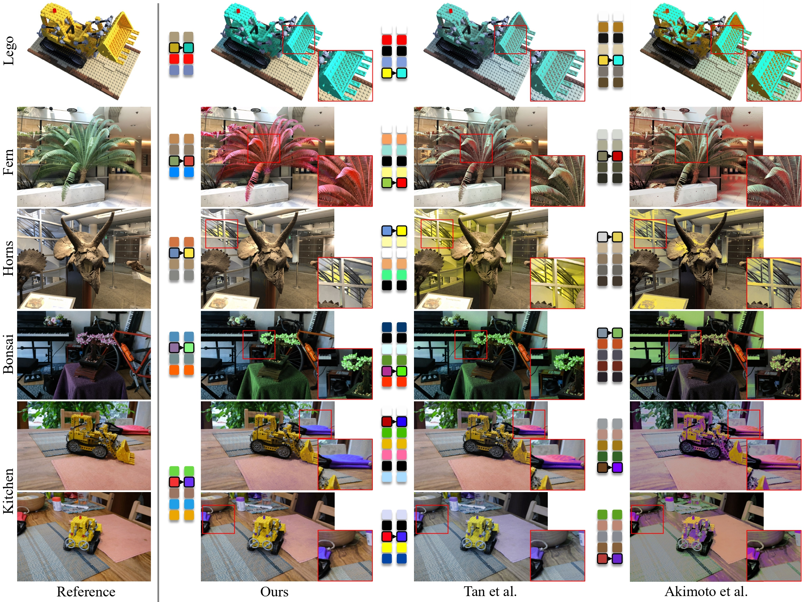

Here we show several representative comparisons between our method and other state-of-the-art methods.
For more results, please refer to our paper and supplementary materials.
Comparison with the palette-based video recoloring method of Du et al.
Comparison with stylization methods

Comparison with palette-based image recoloring methods